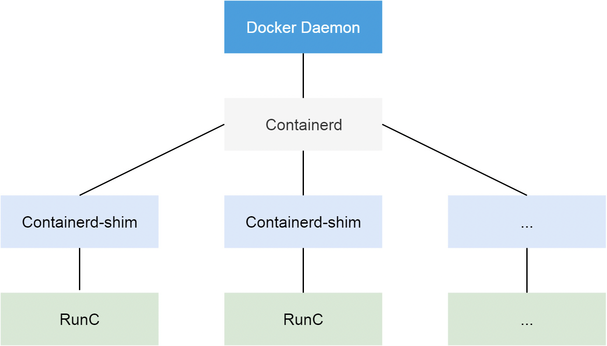
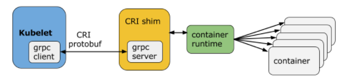
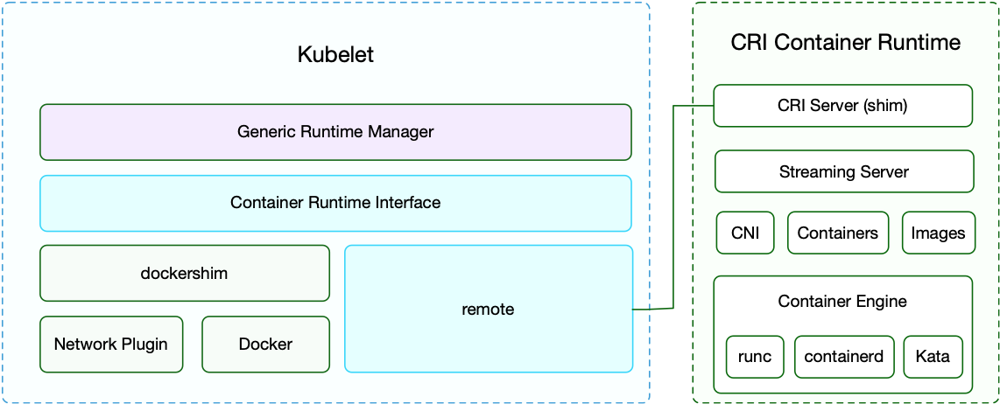
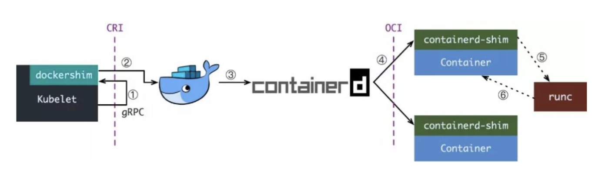
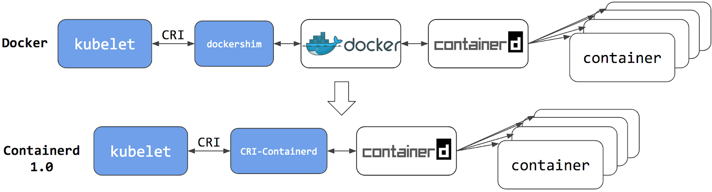
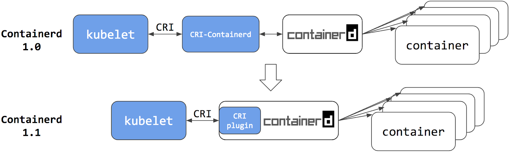
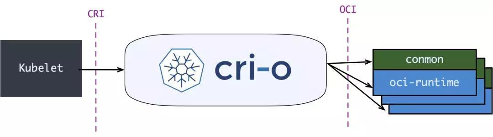

容器运行时¶
在学习 Containerd 之前我们有必要对 Docker 的发展历史做一个简单的回顾，因为这里面牵涉到的组件实战是有点多，有很多我们会经常听到，但是不清楚这些组件到底是干什么用的，比如 libcontainer、runc、containerd、CRI、OCI 等等。
Docker¶
从 Docker 1.11 版本开始，Docker 容器运行就不是简单通过 Docker Daemon 来启动了，而是通过集成 containerd、runc 等多个组件来完成的。虽然 Docker Daemon 守护进程模块在不停的重构，但是基本功能和定位没有太大的变化，一直都是 CS 架构，守护进程负责和 Docker Client 端交互，并管理 Docker 镜像和容器。现在的架构中组件 containerd 就会负责集群节点上容器的生命周期管理，并向上为 Docker Daemon 提供 gRPC 接口。

当我们要创建一个容器的时候，现在 Docker Daemon 并不能直接帮我们创建了，而是请求 containerd 来创建一个容器，containerd 收到请求后，也并不会直接去操作容器，而是创建一个叫做 containerd-shim的进程，让这个进程去操作容器，我们指定容器进程是需要一个父进程来做状态收集、维持 stdin 等 fd 打开等工作的，假如这个父进程就是 containerd，那如果 containerd 挂掉的话，整个宿主机上所有的容器都得退出了，而引入 containerd-shim 这个垫片就可以来规避这个问题了。
然后创建容器需要做一些 namespaces 和 cgroups 的配置，以及挂载 root 文件系统等操作，这些操作其实已经有了标准的规范，那就是 OCI（开放容器标准），runc 就是它的一个参考实现（Docker 被逼无耐将 libcontainer 捐献出来改名为 runc 的），这个标准其实就是一个文档，主要规定了容器镜像的结构、以及容器需要接收哪些操作指令，比如 create、start、stop、delete 等这些命令。runc 就可以按照这个 OCI 文档来创建一个符合规范的容器，既然是标准肯定就有其他 OCI 实现，比如 Kata、gVisor 这些容器运行时都是符合 OCI 标准的。
所以真正启动容器是通过 containerd-shim 去调用 runc 来启动容器的，runc 启动完容器后本身会直接退出，containerd-shim 则会成为容器进程的父进程, 负责收集容器进程的状态, 上报给 containerd, 并在容器中 pid 为 1 的进程退出后接管容器中的子进程进行清理, 确保不会出现僵尸进程。
而 Docker 将容器操作都迁移到 containerd 中去是因为当前做 Swarm，想要进军 PaaS 市场，做了这个架构切分，让 Docker Daemon 专门去负责上层的封装编排，当然后面的结果我们知道 Swarm 在 Kubernetes 面前是惨败，然后 Docker 公司就把 containerd 项目捐献给了 CNCF 基金会，这个也是现在的 Docker 架构。
CRI¶
我们知道 Kubernetes 提供了一个 CRI 的容器运行时接口，那么这个 CRI 到底是什么呢？这个其实也和 Docker 的发展密切相关的。
在 Kubernetes 早期的时候，当时 Docker 实在是太火了，Kubernetes 当然会先选择支持 Docker，而且是通过硬编码的方式直接调用 Docker API，后面随着 Docker 的不断发展以及 Google 的主导，出现了更多容器运行时，Kubernetes 为了支持更多更精简的容器运行时，Google 就和红帽主导推出了 CRI 标准，用于将 Kubernetes 平台和特定的容器运行时（当然主要是为了干掉 Docker）解耦。
CRI（Container Runtime Interface 容器运行时接口）本质上就是 Kubernetes 定义的一组与容器运行时进行交互的接口，所以只要实现了这套接口的容器运行时都可以对接到 Kubernetes 平台上来。不过 Kubernetes 推出 CRI 这套标准的时候还没有现在的统治地位，所以有一些容器运行时可能不会自身就去实现 CRI 接口，于是就有了 shim（垫片）， 一个 shim 的职责就是作为适配器将各种容器运行时本身的接口适配到 Kubernetes 的 CRI 接口上，其中 dockershim 就是 Kubernetes 对接 Docker 到 CRI 接口上的一个垫片实现。

Kubelet 通过 gRPC 框架与容器运行时或 shim 进行通信，其中 kubelet 作为客户端，CRI shim（也可能是容器运行时本身）作为服务器。
CRI 定义的 API 主要包括两个 gRPC 服务，ImageService 和 RuntimeService，ImageService 服务主要是拉取镜像、查看和删除镜像等操作，RuntimeService 则是用来管理 Pod 和容器的生命周期，以及与容器交互的调用（exec/attach/port-forward）等操作，可以通过 kubelet 中的标志 --container-runtime-endpoint 和 --image-service-endpoint 来配置这两个服务的套接字。

不过这里同样也有一个例外，那就是 Docker，由于 Docker 当时的江湖地位很高，Kubernetes 是直接内置了 dockershim 在 kubelet 中的，所以如果你使用的是 Docker 这种容器运行时的话是不需要单独去安装配置适配器之类的，当然这个举动似乎也麻痹了 Docker 公司。

现在如果我们使用的是 Docker 的话，当我们在 Kubernetes 中创建一个 Pod 的时候，首先就是 kubelet 通过 CRI 接口调用 dockershim，请求创建一个容器，kubelet 可以视作一个简单的 CRI Client, 而 dockershim 就是接收请求的 Server，不过他们都是在 kubelet 内置的。
dockershim 收到请求后, 转化成 Docker Daemon 能识别的请求, 发到 Docker Daemon 上请求创建一个容器，请求到了 Docker Daemon 后续就是 Docker 创建容器的流程了，去调用 containerd，然后创建 containerd-shim 进程，通过该进程去调用 runc 去真正创建容器。
其实我们仔细观察也不难发现使用 Docker 的话其实是调用链比较长的，真正容器相关的操作其实 containerd 就完全足够了，Docker 太过于复杂笨重了，当然 Docker 深受欢迎的很大一个原因就是提供了很多对用户操作比较友好的功能，但是对于 Kubernetes 来说压根不需要这些功能，因为都是通过接口去操作容器的，所以自然也就可以将容器运行时切换到 containerd 来。

切换到 containerd 可以消除掉中间环节，操作体验也和以前一样，但是由于直接用容器运行时调度容器，所以它们对 Docker 来说是不可见的。 因此，你以前用来检查这些容器的 Docker 工具就不能使用了。
你不能再使用 docker ps 或 docker inspect 命令来获取容器信息。由于不能列出容器，因此也不能获取日志、停止容器，甚至不能通过 docker exec 在容器中执行命令。
当然我们仍然可以下载镜像，或者用 docker build 命令构建镜像，但用 Docker 构建、下载的镜像，对于容器运行时和 Kubernetes，均不可见。为了在 Kubernetes 中使用，需要把镜像推送到镜像仓库中去。
从上图可以看出在 containerd 1.0 中，对 CRI 的适配是通过一个单独的 CRI-Containerd 进程来完成的，这是因为最开始 containerd 还会去适配其他的系统（比如 swarm），所以没有直接实现 CRI，所以这个对接工作就交给 CRI-Containerd 这个 shim 了。
然后到了 containerd 1.1 版本后就去掉了 CRI-Containerd 这个 shim，直接把适配逻辑作为插件的方式集成到了 containerd 主进程中，现在这样的调用就更加简洁了。

与此同时 Kubernetes 社区也做了一个专门用于 Kubernetes 的 CRI 运行时 CRI-O，直接兼容 CRI 和 OCI 规范。

这个方案和 containerd 的方案显然比默认的 dockershim 简洁很多，不过由于大部分用户都比较习惯使用 Docker，所以大家还是更喜欢使用 dockershim 方案。
但是随着 CRI 方案的发展，以及其他容器运行时对 CRI 的支持越来越完善，Kubernetes 社区在2020年7月份就开始着手移除 dockershim 方案了：https://github.com/kubernetes/enhancements/tree/master/keps/sig-node/2221-remove-dockershim，现在的移除计划是在 1.20 版本中将 kubelet 中内置的 dockershim 代码分离，将内置的 dockershim 标记为
那么这是否就意味这 Kubernetes 不再支持 Docker 了呢？当然不是的，这只是废弃了内置的 dockershim 功能而已，Docker 和其他容器运行时将一视同仁，不会单独对待内置支持，如果我们还想直接使用 Docker 这种容器运行时应该怎么办呢？可以将 dockershim 的功能单独提取出来独立维护一个 cri-dockerd 即可，就类似于 containerd 1.0 版本中提供的 CRI-Containerd，当然还有一种办法就是 Docker 官方社区将 CRI 接口内置到 Docker 中去实现。
但是我们也清楚 Docker 也是去直接调用的 Containerd，而 containerd 1.1 版本后就内置实现了 CRI，所以 Docker 也没必要再去单独实现 CRI 了，当 Kubernetes 不再内置支持开箱即用的 Docker 的以后，最好的方式当然也就是直接使用 Containerd 这种容器运行时，而且该容器运行时也已经经过了生产环境实践的，接下来我们就来学习下 Containerd 的使用。